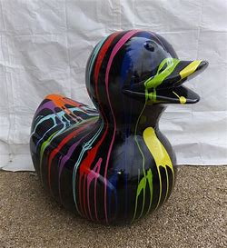

LES CANNARDS : A LA BASE DE L'ART

Le cannard fut la soucre d'inspiration de beaucoup d'artiste comme Tycieso , un jeune
artiste qui met le cannard au centre de ses creations, postant ces oeuvres sur Instagram et
Tiktok , il reproduit des portaits de cannards sous différentes formes .
Voici quelques unes de ces oeuvres:

Si Andy Warhol avait déssiné des cannards

La Joconde par Leonard Duck Vinci

Duckey Kong